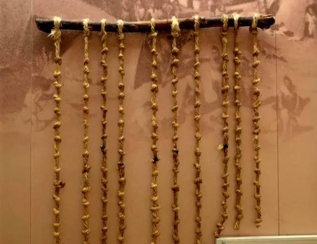
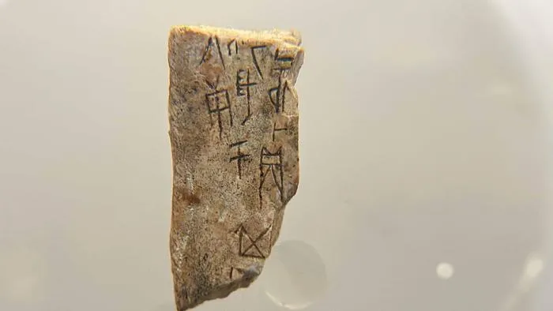
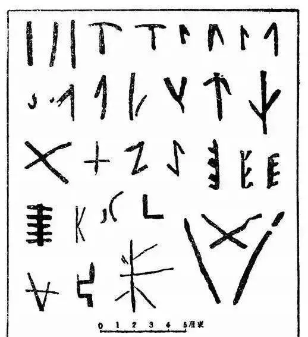
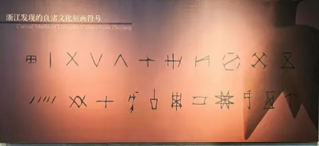

文字诞生前的三种原始记录方式
结绳记事、刻契和图画档案，共同构成了文字诞生前，人类记录历史、传递信息的「原始档案」时期。它们可以被看作是档案的萌芽与起源的初始形态。
下面为你分别介绍这三种形式：

通过在绳子上打出不同大小、形状、颜色的绳结来记录信息。中国古籍有「上古结绳而治」的记载，古代印加人的「奇普」也是著名的结绳系统。
核心作用：辅助记忆、计数、备忘和信守承诺，是早期人类重要的信息存储方式。

在木片、竹片、骨片或石头上刻划符号或标记来记事。常与结绳记事并提，称为「结绳刻契」时代。
核心作用：记事、备忘和作为信守约定的凭证。记录的信息比绳结更具体，是文字的雏形。

原始人通过绘画记录生活与事件。起初是复杂的图画，后来逐渐演变为简化的符号。我国仰韶文化、龙山文化彩陶上的刻画符号，被认为是简化了的图画。
核心作用：图画是文字的重要先驱，为后来成熟文字的出现奠定了基础。

结绳、刻契与图画，不仅是先民生活的印迹，更是后人研究远古社会的第一手原始史料。它们真实记录了当时的生产活动、社会关系和信仰习俗，为考古学、人类学提供了无可替代的实物证据。
例如，出土的刻契符号与彩陶纹样，直接印证了文字诞生前的信息传递方式，具有法律凭证、文化记忆等多重价值，是档案“原始记录性”的最早体现。
这些古老的记录方式，不仅启发了后世文字与符号的发明，更深刻影响了档案管理的理念。学者通过对结绳、刻契、岩画的深入研究，揭示了人类信息管理的演化脉络。
当代档案学中的“来源原则”“凭证价值”等核心概念，均可追溯至这些原始实践。它们跨越时空，为数字时代的档案工作提供了历史根基与人文温度，使档案事业在创新中不忘本源。
结绳、刻契和图画，是人类在蒙昧时代为对抗遗忘、保存记忆所做的伟大尝试。它们虽然原始，却点燃了记录与传承的火种，为后来辉煌的文书档案时代奠定了基础。